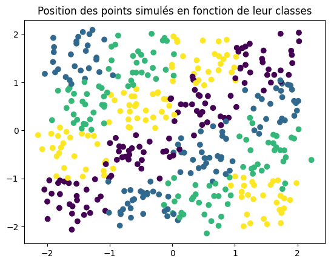
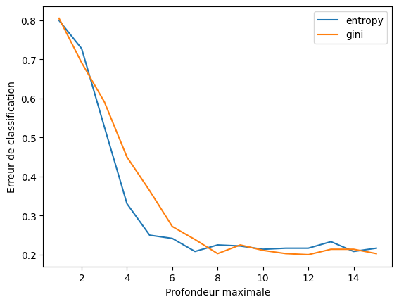
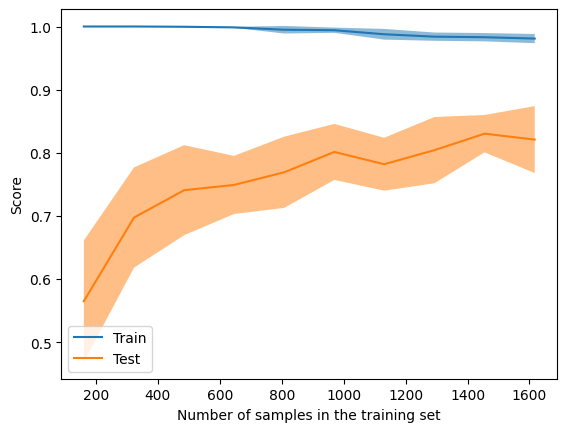

L’objectif de ce TP est de mettre en oeuvre les arbres de décision pour la classification et la régression. On utilisera pour cela la librairie scikit-learn de python, et on s’appuiera sur les fonctions de visualisation de la librairie matplotlib, au travers d’un certains nombres de fonction contenues dans le script tp_arbres_source.py.
Première question : Mesure d’Homogénéité
Dans le cadre d’une régression, on peut proposer comme mesure d’homogénéité de la classification la minimisation de la variance intra-cluster , c’est a dire la maximisation de la variance inter-clusters, et donc la maximisation du \(R^2\).
Si on note les clusters \(C^k\) et les barycentre des clusters \({\bar y}^k\) , on a :
Deuxième question : Variation de la profondeur maximale de l’arbre
Jeu de données :
On simule à l’aide de la fonction rand_checkers des échantillons de taille \(n=456\) répartis en classes sous forme de damiers puis on affiche le jeu de données en utilisant la couleur pour représenté le cluster.
Code
from numpy.random import seedfrom tp_arbres_source import rand_checkersimport matplotlib.pyplot as pltseed(1)n =456n1 = n//4n2 = n//4n3 = n//4n4 = n - n1 - n2 - n3 dataset = rand_checkers(n1,n2,n3,n4)plt.scatter(dataset[:,0], dataset[:,1], c=dataset[:,2])plt.title('Position des points simulés en fonction de leur classes')plt.show()

Jeu de données simulé
Ajustement :
On ajuste ensuite 15 abres de décisions différents sur le jeu de données, en faisant varier les paramètres max_depth et min_samples_split et on affiche les erreurs obtenus.
Ajustement d’arbres de décision de profondeur maximale variable
Troisième question : Visualisation de la classsification obtenue
On va selectionner m=12 pour la valeur de max_depth qui minimise l’erreur, et on va représenter le classifieur obtenu en coloriant des points répartis équitablement dans [-2,2]x[-2,2] en fonction de la classe que le classifieur leur attribue :
On constate ici un score largemet inférieur au score fait sur l’echantillon d’entrainement , en effet on a seulement chercher à minimiser l’erreur d’entrainement sans se poser la question de la généralisation.
Sixième question : Application au jeu de données Digits
Jeu de données :
Nous téléchargons le jeu de données digits et nous le séparons en deux parties, une partie pour l’entrainement et une partie pour le test.
Code
from sklearn.datasets import load_digitsdigits = load_digits()train_size =int(0.8*len(digits.data))train_x = digits.data[:train_size,:]train_y = digits.target[:train_size]test_x = digits.data[train_size:,:]test_y = digits.target[train_size:]print("Nombre de données d'entrainement : ", len(train_x))print("Nombre de données de test : ", len(test_x))
Nombre de données d'entrainement : 1437
Nombre de données de test : 360
Ajustement :
On ajuste ensuite 15 abres de décisions différents sur le jeu de données d’entrainement, en faisant varier les paramètres max_depth , et on regarde leur erreur sur le jeu de test :
Code
m =15result_entropy =list()result_gini =list()for i inrange(m) : classifier = tree.DecisionTreeClassifier(max_depth=i+1, criterion='entropy') classifier.fit(train_x, train_y) result_entropy.append(1-classifier.score(test_x, test_y)) classifier = tree.DecisionTreeClassifier(max_depth=i+1, criterion='gini') classifier.fit(train_x, train_y) result_gini.append(1-classifier.score(test_x, test_y))plt.plot(range(1,m+1), result_entropy, label='entropy')plt.plot(range(1,m+1), result_gini, label='gini')plt.xlabel('Profondeur maximale')plt.ylabel('Erreur de classification')plt.legend()plt.show()

Ajustement d’arbres de décision de profondeur maximale variable sur le jeu de données digits
On observe que l’erreur sur le jeu de test est minimale pour une profondeur maximale de 7 avec le critère d’entropie et 9 avec le critère de gini.
Exportons les deux arbres sous forme de fichier .dot :
On s’appercoit que le score semble stagner à partir d’une profondeur maximale de 8 (que l’on va conserver pour avoir la complexité minimale du modèle), et que le critère d’entropie semble donner de meilleurs résultats.
Huitième question : Courbe d’apprentissage
On va maintenant tracer la courbe d’apprentissage de l’arbre de décision obtenu avec une profondeur maximale de 8 et le critère d’entropie.
<sklearn.model_selection._plot.LearningCurveDisplay at 0x1bdee2cdfd0>

L’erreur d’entrainement est toujours quasiment nulle et l’erreur de validation augmente et semble stagner au dessus du milier de données d’entrainement.